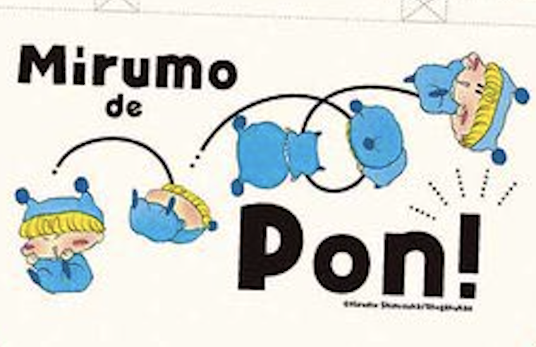

２０２４年８月１０日〜１１日にガルフェス2024が開催されました！
私は用事で行けなかったので、公式SNSのポストをぺたぺた貼って記録に残しておきたいと思います。
年に一度のイベントなだけあって、お祭りのようなにぎやかさがあってよいですね！(^^)
／
— ちゃお編集部 (@ciao_manga) August 10, 2024
📢#ガルフェス2024 開催中👑🎀
＼
ちゃお編集部ブース内にあるレジェンド作品キャンバスアート展示コーナーで
大好きなアクスタとパチリッ📸🩷#ちゃお#ガールズコミックフェス#ガルフェスhttps://t.co/xuWAJkbYRL pic.twitter.com/FN7sna9mEX
とってもにぎやかなキャンバスアート！
楓と結木くんのデート、外野がにぎやかなのはお約束ですね(^^;
そしてちゃっかり「ましゅもっち」も飾られてる！
／
— ちゃお編集部 (@ciao_manga) August 10, 2024
📢#ガルフェス2024 開催中👑🎀
＼
ガルフェス限定グッズが買えちゃう✨
ちゃおのレジェンド作品グッズも🙌
何が当たるか楽しみ💕なちゃおくじも‼️
くわしくはガルフェスHPをチェック！https://t.co/YwDmVrHPMW pic.twitter.com/SYP1btQbX9
ちゃおくじB賞のランチトートのミルモがかわいい！
当たる確率はものすごく低そうなのでこれは超レアグッズですね。
↓ミルモのランチトートに描かれている絵柄（公式SNSの画像より引用）

／
— ちゃお編集部 (@ciao_manga) August 10, 2024
📢#ガルフェス2024 開催中👑🎀
＼
篠塚ひろむ先生が
ただいまライブドローイング中✍🏻💖✨
みんなみにきてねー❣️❣️❣️#ちゃお#ガールズコミックフェス#ガルフェスhttps://t.co/xuWAJkbYRL pic.twitter.com/3vKTCGDRia
篠塚先生の一発描き！
やはりプロの先生のイラストは素晴らしすぎです＞＜
／
— ちゃお編集部 (@ciao_manga) August 10, 2024
⏰12:00〜サイン会コーナーA#篠塚ひろむ 先生サイン会
＼
【「ケモっちびより！」篠塚ひろむ先生】のサイン会がはじまってるよ〜❣️
ご参加の方はサイン会コーナーAまで集まってね✨#ちゃお#ガールズコミックフェス#ガルフェスhttps://t.co/xuWAJkbYRL pic.twitter.com/LSlEoSIDWr
土曜日の方で篠塚先生のサイン会がありました！
／
— ちゃお編集部 (@ciao_manga) August 10, 2024
📢#ガルフェス2024 開催中〜〜！！👑🎀
＼
アニメバコブースでは
「きらりん☆レボリューション」「ミルモでポン！」「ちび☆デビ！」の自分だけのオリジナルネームステッカーが作れちゃうよ🌟
みんな作ってみてね💕💕💕https://t.co/RWsjYvwgCC pic.twitter.com/bTS1gTbbRh
アニメバコブースでミルモなどのオリジナルネームステッカーを作ることができました！
アニメバコのミルモグッズが通販されるかどうかの情報は今の所ないようですね。。。
新たな情報があり次第お知らせいたします！
（情報お持ちの方は教えていただけると助かります〜）
2024/8/18追記
アニメバコのミルモグッズは事後通販されるとのことです！
＼🎉ガールズコミックフェス2024 2日間終了🎉／
— アニメバコ公式アカウント (@anime_bako) August 11, 2024
2日間アニメバコブースにご来場いただきありがとうございました💓💫
また大好評につき、会場で販売したグッズの事後通販が決定しました！！
詳細は続報をお待ちください！#ガルフェス2024 #アニメバコ
(2024/8/17)